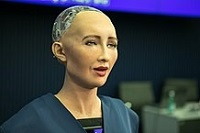
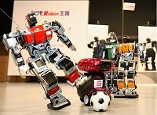

第三章 機器人
一、機器人介紹
|  | 蘇菲亞 | 漢森機器人公司做的人工智慧機器人，入籍沙烏地阿拉伯。 設計原型:英國時尚女神奧黛麗·赫本。 臉部有個62個控制元件、4個攝影機(2個在眼睛2個在胸前)， 可以辨識人臉及對方的情緒，因此它的表情擬真、對答如流。 |
| ASIMO | Honda機器人： 第一代: E2，較高大，183公分，深度：75.6公分，寬度：60公分。 第二代: ASIMO，較矮較靈活。可以上下樓梯。 上下樓梯對機器人來說其實很難，因為要能夠平衡要利用眼睛、手腳、身體的互相協調。 早期要跟機器人握手也是很困難的事，因為他們的力道會太強。 |
|
|  | KHR-2HV | 由Kondo Kagaku所製作的踢足球機器人。 理想的踢足球機器人是動作要靈活，跌倒了能很快爬起來的。 KHR-2HV目前是遙控控制的。 |
| Pepper | Pepper是日本軟銀發明出來的，目前是鴻海代購。 Pepper機器人是播放型機器人。他有一個螢幕在前面，跟他對談的時候有螢幕顯示。 Pepper剛開始出來的時候只是類人形機器人，但是那時候他不會思考。 日本軟銀的董事長孫正義到美國加州史丹佛大學請教教授，詢問如何讓機器人思考。 | |
| ROBO-Q | 日本玩具大廠 TAKARA TOMY 研發生產全球最小的類人形機器人ROBO-Q ， 裡面有很多探測器，除了會走路，還會自動閃避障礙物，可用紅外線做遙控。 | |
| Paro機器人 | 日本在2008年的機器人博覽會上，秀出醫療機器人，外型像海豹寶寶， 可以安撫病人，但這種機器人的租金很貴：要約35萬日幣。 |
二、國際間的機器人發展
最早核准機器人成為公民的是中東的阿拉伯，而日本是在之後的一個禮拜承認機器人公民的國家。最早機器人是以日本為主，美國後來居上，所以美國有這個機會，讓蘇菲亞在阿拉伯成為第一個機器人公民。
- 美國:
去年用類似像魚雷的形狀的機器人到南海附近偵測，但有一隻被大陸的漁民撈到交給警方。 - 台灣:
2006年，那時候台灣就開始引進機器人展，因為越做越像人類，所以有擬人類、類人形之稱。 - 大陸:
在AI人工智慧機器人這部分投入的很積極，北京大學有個實驗室叫做智能控制實驗室。裡面做一些像水中或水下的仿生動物，可以偵測水溫、水質、可以遙控機器靠近敵人的碉堡等。 - 新加坡:
機器人現在在新加坡用的很廣泛，飯店送餐、餐廳收盤子、無人駕駛...。機器人目前還可以用來陪伴老人。 - 日本:
2007，在東京的機器人運動大會上出現Kondo Kagaku所製作的KHR-2HV。但其實在1997，就有設一個長期目標：在21世紀，希望有一個機器人組成的球隊能遵守世界足球協會的官方規定，然後跟世界杯冠軍競賽並獲得冠軍。
三、機器人的應用
- 亞馬遜商務管理機器人 (Automatic Guide Vehile，AGV(無人駕駛搬運車))可以應用在物流中心。
- 吸塵器機器人 中東地區的地毯都很大，利用機器人來做能大大提升效率
- 機器人裝 混合義肢(hybrid assistive limb)：可以出租給殘障人士或是老年人，協助四肢，加強骨骼。
四、工業機器人
- 德國的KuKa
- 日本的FANUC
- 日本的YASKAWA
- 瑞士的ABB
五、機器人分三類
《大陸製造2025》
大陸希望在2025年趕上美國，甚至超越美國，能跟德國並駕齊驅。
書裡面把人工智慧分成三部分：
弱人工智慧，擅長單方面的人工智慧，像象棋、圍棋等......。
強人工智慧，人類級別的人工智慧，能與人類並肩，只要人類能做的，它都可以做。
超人工智慧，幾乎比所有聰明的人類還要聰明很多，甚至能創新。
六、艾西莫夫機器人三定律
機器人名詞由來：
1920捷克作家第一次使用robot，起源於捷克工作的工人robota的意思。
這個作者將機器人的地位定為只管來頭苦幹、被人類壓榨的奴隸。
存在的價值是服務人類，沒有思維能力、不能思考，外型類似人類，能生存20年，生產出來後由人類教導，幫助公司生意興隆。
後來機器人慢慢有思維，不甘人類的統治、做人類的奴隸，所以想要摧毀人類。
機器人三定律:
第一法則：機器人不得傷害人類，且確保人類不受傷害；
第二法則：在不違背第一法則的前提下，機器人必須服從人類的命令；
第三法則：在不違背第一及第二法則的前提下，機器人必須保護自己。
七、對於人工智慧的意見
特斯拉總裁馬斯克：
我們應該十分警惕人工智慧，如果要猜對人類存亡的最後威脅是什麼，很可能就是人工智慧。
史蒂芬霍金：
未來五百年，電腦將憑藉人工智慧取代人類。人工智慧的全面發展或許意味著人類的終結，人工智慧將會自我覺醒，以不斷增加的速度重新設計著。
比爾蓋茲：
我不是屬於擔心人工智慧的陣營，幾十年以後人工智慧進階到足夠強大的程度，那麼就該擔心了。
延伸閱讀-混合義肢(hybrid assistive limb)
HAL是一種可穿上的機器人，日本筑波大學山海嘉之教授創立的Cyberdyne公司研發出HAL，可以輔助老人、殘障者行走或是上下樓梯等，已經應用在日本的多台康復設施中。最新的這套機器人裝重11公斤，它能預測使用者的動作，並做出行動，能輔助穿戴者移動
原理:
當一個人要行走時，大腦會通過神經向肌肉發出生理信號，而感測器會接收腦部傳來區動肌肉動作的訊號，HAL的伺服系統便會被激活，可以增強行走的強度與穩定性。因此，HAL不僅是機器控制，同時有機器的「自動控制」和穿戴者透過神經傳導訊號的「自主控制」。
其他應用:
除了可以用在康復領域之外，HAL將會很快地用於日本的福島核電廠。它能夠產生的能量是人體的十倍之多，它也可以應用在工廠或建築工地、軍事用途、需要消耗大量勞力的裝配/服務業與建築業等上面。
個人心得
這堂課的內容我覺得很有趣，以前也有看過很多跟機器人有關的電影，其中也很多議題都是很值得我們去探討的，剛好這次有機會可以稍微了解機器人。以前從電影中都覺得機器人就是長得跟我們很像，然後很聰明、很強壯的，但從課程中我知道了原來有各種類型的機器人，有療癒型的Paro機器人、家用型的Pepper、迷你的RoBo-Q或是像掃地機器人等等……。這些機器人被應用在各種領域來幫助人們，像我親戚家就有一台掃地機器人，能幫他們節省很多時間。而延伸的HAL機器人裝更是大大的幫助了很多行動不便的人們。
我們製造出機器人是為了要改善我們的生活，因為這些機器人能做出我們原本要自己做卻極花費勞力及時間的事，但我們也不免擔心若是我們製造出很強大、功能齊全、聰明的機器人後，我們是否會完全被機器人取代，是否這樣的機器人會做出人類無法承受的事。人工智慧越來越強大，很多人都會擔心機器人要是能思考了，會不會做出機器人蘇菲亞所說的:「我會消滅人類」這樣的事。凡事都有兩面，機器人若是好好發展，未來真的會很便利，但我們也須警惕這些發展不要超出人類的掌控，否則要是真的因為機器人而引發第三次世界大戰，那可就得不償失了。
我們製造出機器人是為了要改善我們的生活，因為這些機器人能做出我們原本要自己做卻極花費勞力及時間的事，但我們也不免擔心若是我們製造出很強大、功能齊全、聰明的機器人後，我們是否會完全被機器人取代，是否這樣的機器人會做出人類無法承受的事。人工智慧越來越強大，很多人都會擔心機器人要是能思考了，會不會做出機器人蘇菲亞所說的:「我會消滅人類」這樣的事。凡事都有兩面，機器人若是好好發展，未來真的會很便利，但我們也須警惕這些發展不要超出人類的掌控，否則要是真的因為機器人而引發第三次世界大戰，那可就得不償失了。